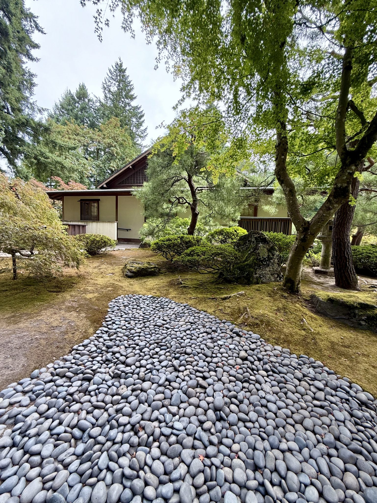

GUIDE & ACCESS
ご来店にあたって
掲載している写真はすべてイメージ素材です。実店舗の写真ではありません。出典・ライセンスはページ下部の「画像クレジット」をご確認ください。
営業日・営業時間
※臨時休業等の情報は現在確認できておりません。あらかじめご了承ください。
ご来店の流れ
靴を脱いで店内へ
靴を脱いで店内へお上がりください。
カウンターで先にご注文・お会計
レジカウンターで先にご注文・お会計をお願いします。
着席してお待ちください
席にお着きになり、お料理が仕上がるまでお待ちください。
ゆっくりお過ごしいただくためのお願い
千年木は店主ひとりで営んでいます。ご注文を受けてから調理(揚げ物など)を行うため、提供までに30分ほどかかることがあります。お時間に余裕を持ってお越しください。
店内にBGMはなく、静かな空間が広がります。読書など、ひとりの時間をゆっくり楽しみたい方にも向いているお店です。
冬季のご案内
個別ストーブと膝掛けをご用意
個別のストーブと膝掛けのご用意があります。一方で、真冬の時期は寒さを感じるという声もありますので、冷え性の方は重ね着など防寒対策をしていただくと安心です。
お支払いについて
PayPayでのお支払いに対応しています。その他の決済方法については確認中です。詳しくは店頭でご確認ください。
席数・人数の目安
お席の数は多くありません。1〜2名でのご来店に向いています。大人数でのご利用にはあまり向いていませんので、あらかじめご了承ください。

玄関先の野菜販売
野菜・果物だけのお買い物も歓迎
玄関先では、店主のお父様が育てた採れたての野菜や、高崎市産の野菜を販売しています。野菜や果物だけのお買い物も歓迎とのことです。カフェのご利用がない日でも、お散歩の途中にお立ち寄りいただけます。
アクセス

群馬県高崎市内の路地裏にお店はあります(詳細な番地は確認中です)。看板を大きく出していないお店のため、Googleマップで地図を確認してからお越しいただくことをおすすめします。
地図枠(静的プレースホルダー)。正式な住所が確定次第、埋め込み地図に差し替え予定です。
Googleマップで経路を確認する